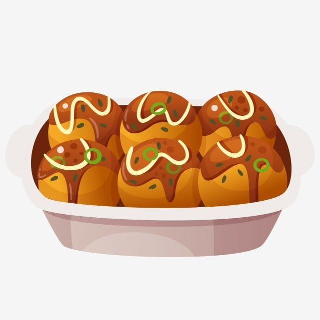

CULINARIA AO REDOR DO MUNDO
MUITOS TIPOS DE COMIDAS PODEM SER PARECIDOS,
MAS CADA UM LEVA UMA HISTÓRIA OU COSTUME DIFERENTE
JUNTO A COMIDA TIPÍCA DE UM LUGAR
NESSE SITE MOSTRAREMOS PAÍSES, SEUS PRATOS TIPÍCOS E AS HISTÓRIAS POR TRÁS
INTRODUÇÃO:

AS ORIGENS: CONTAN DE QUAL PAÍS SE ORIGINOU..............
A HISTÓRIA: CONTAN COMO FOI QUE SURGIU E POR QUE